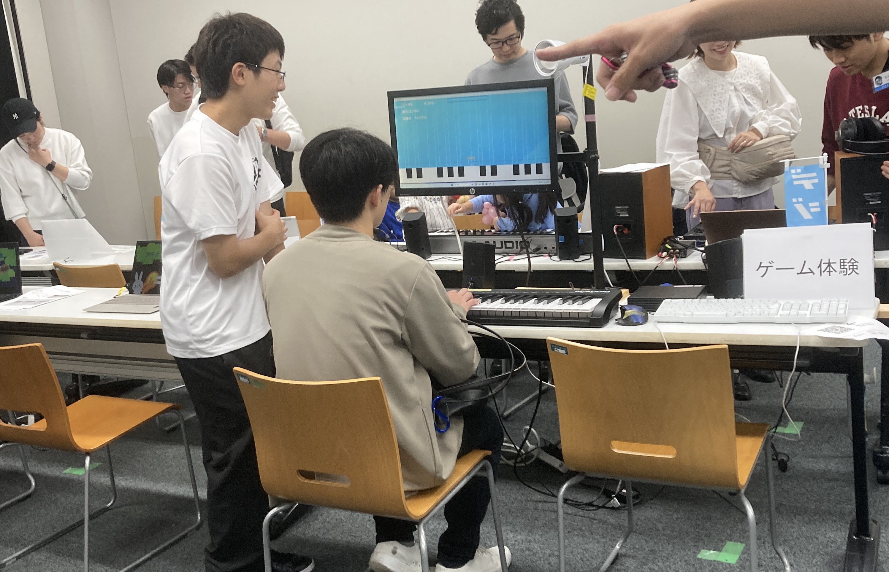
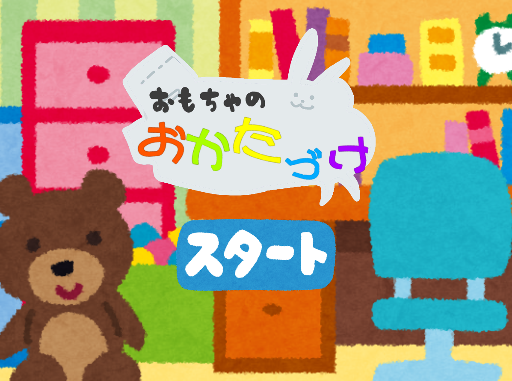
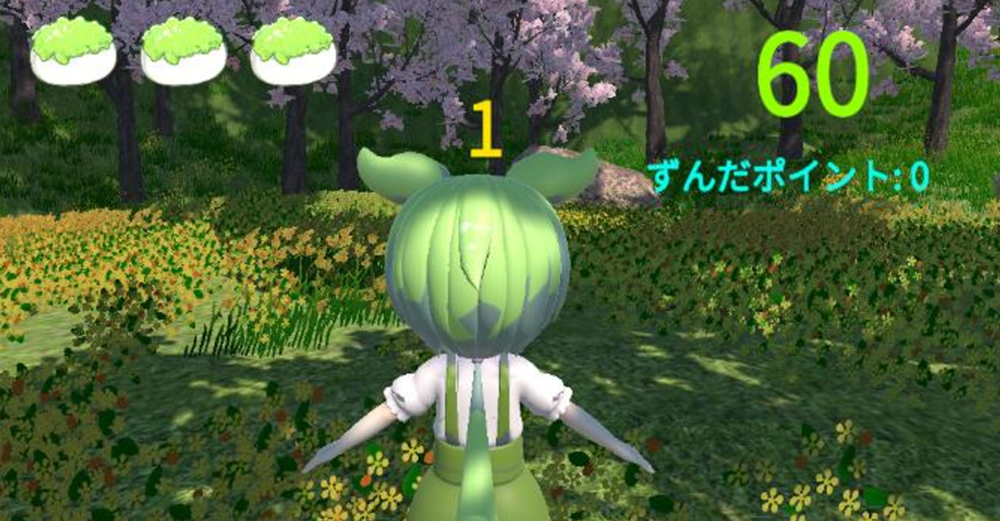

MESSAGE
記録を示す。
よおおおおおおおおおおおおおおおおおおおおおおお
よおおおおおおおおおおおおおおおおおおおおおおお
よおおおおおおおおおおおおおおおおおおおおおおお
よおおおおおおおおおおおおおおおおおおおおおおお
プロフィール
部活活動

Матрёна(マトリョナ)
文化祭に向けて5人チームで制作したゲームです。暗くて不思議な雰囲気と爽快な操作・エフェクトが売りのゲームとなっています。- 
Keyboard Fan
文化祭に向けて制作したゲームでピアノ型コントローラーというハードウェアを用いることにより、子供たちに非常に人気のある展示になりました。 
メルトロマンティックナイト
文化祭のMV企画で制作した動画です。イラストや音楽を別の方に作ってもらい、自分がこの企画の要となる動画を制作しました。
Wordle RTA
文化祭に向けてWordleというゲームをもとにランキング、ランク要素を加えたものになっています。- 
おもちゃのお片付け
入学初期に3人チーム制作したゲームです。音楽を軽やかな風に作りました。 - 
お花見ずんだもん
3人チーム制作したゲームで、和風というお題からチームの話題で共通点となったずんだもんを組み込み面白おかしいゲームにしました。